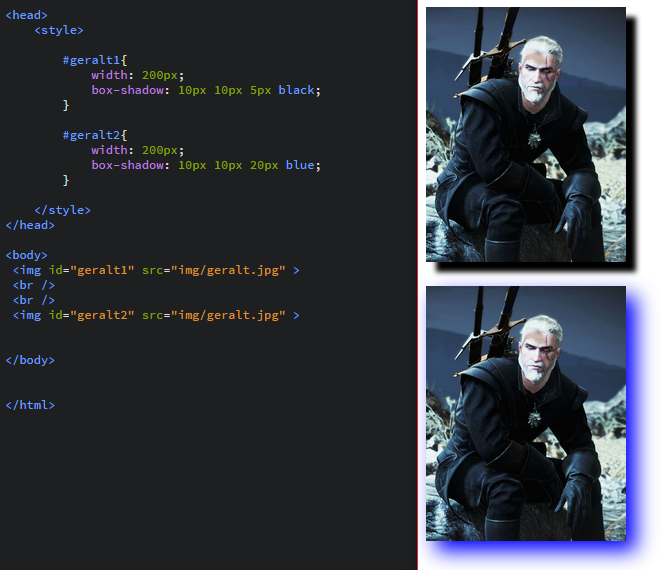

WARSZTATY WEBOWE Mikołaj Szumigalski
Powrót
Zajęcia 6
Link do pobrania prezentacji z zajęć nr 6: Prezentacja 6
Stylowania ciąg dalszy
Na ostatnich zajęciach poznaliśmy sposoby w jaki można dodawać style do naszych plików HTML. Powiedzieliśmy też o kolorach i czcionkach.
1. Stylowanie obrazów
Oprócz podstawowych atrybutów takich jak width i height obrazy można stylować na wiele innych sposobów, które dziś poznamy. Każdy z tytułów jest dodatkowo linkiem do profesjonalnego tutoriala w którym na trochę bardziej iteraktywnych przykładach można zobaczyć to co będziemy na zajęciach przerabiać.
1.1 Obramowanie
Możliwości obrmowań jest naprawdę dużo. Zacznijmy od podstawowej własności border. Przyjmuje ona 3 wartości: grubość (w pikselach), styl i kolor(w wybranej notacji). Jakie są style do wyboru?
| none | brak obramowania |
|---|---|
| dotted | kropkowane obramowanie |
| dashed | linia przerywana |
| solid | jednolity |
| double | podwójny, pusty w środku |
| groove | wyżłobiony |
| ridge | wypukły |
| inset | wstawka z góry i z lewej |
| outset | wstawka z prawej i z dołu |
Oczywiście border to tylko bazowa własność, której mamy też kilka innych wariantów:
1.2 Border-radius
Ta własność służy do zaokrąglania narożników. Możemy zaokrąglać za pomocą pikseli ,lub za pomocą wartości procentowych. Dodatkowo ta właściwość może przyjmować kilka argumentów w zależności od tego ile wierzchołków chcemy zaokrąglać:
| border-radius: wartość1 | jeśli podamy tylko jedną, wszystkie wierzchołki zaokrąglą się o podaną wartość |
| border-radius: wartość1, wartość2 | jeśli podamy dwie wartości, ta pierwsza ostyluje wierzchołki: lewy górny i prawy dolny, a ta druga wartość pozostałe dwa |
| border-radius: wartość1, wartośc2, wartość3, wartość 4 | jeśli podamy 4 wartości, każdy wierzchołek stylujemy osobno w kolejności od lewego górnego zgodnie z ruchem wskazówek zegara |
Jest też możliwość nadawania oddzielnie każdemu wierzchołkowi zaokrąglenia poprzez własności
- border-top-left-radius:
- border-top-right-radius:
- border-bottom-right-radius:
- border-bottom-left-radius:

Jak widać na ostatnim przykładzie border-radius daje nam ciekawą funkcję - jeśli nasz obrazek jest kwadratem to nadając mu border radius o wartości przynajmniej połowie długości jego boku (lub procentowo nadamy min. 50%) wtedy obrazek będzie okrągły.
1.3 Centrowanie obrazka
Żeby wycentrować obrazek nie trzeba używać znacznika center. Wystarczą do tego 2 własności użyte razem. Pierwsza to margin, która jak łatwo się domyślić służy do określenia marginesu elementu. Wartoś margin ustalamy na auto, wtedy przeglądarka sama nam obliczy odpowiedni margines. Do tego potrzebujemy display, czyli wybieramy sposób wyświetlania się elementu. Za pomocą niego ustalamy czy element wyświetla się liniowo (inline) czy blokowo (block). Obrazki domyślnie wyświetlają się liniowo, dlatego musimy ustawić display na block. Dlaczego? Element blokowy zawsze będzie wyświetlał się sam w jednej linii, więc jeśli przeglądarka musi sama określić automatycznie jej margines ustawi go jednocześnie z obu stron tak, że będzie on wyśrodkowany. Zasadniczo wystarczy wykuć na pamięć margin: auto; display: block, ale wolałbym, żebyście zrozumieni, skąd to się bierze, wtedy łatwiej z pamięci to napisać. Warta zapamiętania metoda, ponieważ można ją stosować też do innych elementów. Pamiętajmy jednak, że centrując np. diva, centrujemy tylko sam obiekt. Do wyśrodkowania np. tekstu w divie musimy już użyć własności text-align, którą ustawiamy na center
{kind=link}
Cień obrazka
Czasami zwykły border może nam się wydawać mało estetyczny. W takim przypadku możemy użyć cieniowania i własności box shadow Posiada on sporo atrybutów. Cień traktujemy jak duplikację naszego obrazka, tylko zamieniamy treść obrazka na jakiś kolor i modyfikujemy jego wilkością i położeniem do uzyskania pożadanego efektu. Do modyfikowania położenia służą 2 pierwsze wartości. To odległości wierzchołka cienia od wierzchołka obrazka. Trzecia wartość to kolor cienia. Dla zrozumienia przykład.
{kind=link}
Ja widzimy mogą być też wartości ujemne. Ale to jeszcze nie jet to co byśmy chcieli. Na razie to wygląda jak przesunięty border. Aby ustawić cień, trzeba dodać kolejną wartość również w pikselach, która oznacza wielkość rozmycia cienia. Umieszczamy ją między kolorem, a współrzędnymi
{kind=link}
No i jeszcze wielkość samego cienia. Jest to również wartośc w pikselach, którą dajemy między kolorem, a rozmyciem.
{kind=link}
Posumowując: schemat nadawana cienia wygląda tak: box-shadow: x, y, rozmycie, wielkośc kolor gdzie x, y to współrzędne cienia względem obrazka oczywiście.
1.4 Przezroczystość obrazka
Ostatno mówiliśmy o przezroczystości kolorów, teraz powiemy sobie o przezroczystości obrazka, które wygląda bardzo podobnie. Wystarczy dodać właściwość opacity, która przyjmuje wartości liczbowe od 0 do 1. Im mniejsza wartość tym większa przezroczystość
{kind=link}
1.5 Filtry
Co ciekawe nie potrzebujesz do nich Instagrama, możesz to zrobić w css'ie. Służy do tego własność filter Zdaję sobię sprawę, że to może powinno być w formie ciekawostki, ale myślę, że warto chociaż wiedzieć, że tak można. Poniżej tabelka z filtrami css'a + przykłady użycia
| Filtr (podajemy jako wartość własności filter) | Co robi i jakie wartości przyjmuje |
|---|---|
| blur(wartość-px) | Rozmycie obrazka, im większa wartość w px, tym większe rozmycie |
| brightness(wartość-%) | Jasność, przyjmuje wartość w procentach. Powyżej 100% mamy rozjaśnienie, ponieżej 100% przyciemnienie |
| contrast(wartość-%) | Kontrast kolorów, analogiczne wartości procentowe jak w poprzenim przykładzie |
| grayscale(wartość-%) | nadawanie szarości, wartość w procentach, max 100% (czarno biały obraz) |
| hue-rotate(wartość-deg) | rotacja odcieniami, wyrażona w stopniach(jednostka deg) |
| invert(wartość-%) | odwracanie kolorów, wartości w procentach. Max 100% (kolory całkowicie odwrotne) |
| saturate(wartość-liczba) | saturacja(nasycenie), nie jestem grafikiem i nie chcę się wgłębiać w ten temat za mocno, chętnych odsyłam tutaj. Jest ona związana m.in. z wartościami RGB |
| sepia(wartość-%) | nie będę tłumaczył dokładnie czym jest sepia, głównie chodzi o "brązowienie" obrazka (pozwala np. nadać efekt wyglądu jak w starych zdjęciach). Tu wartości od 0% do 100% (same odcienie brązu) |
Oczywiście efekty można łączyć (możliwe, że nie wszystkie, ale warto próbować dla osiągnięcia ciekawszych efektów)
{kind=link}
Poniżej rysunek pomocniczy do hue-rotate

2. Ustawianie tła
Ustawialiśmy już kolor tła, ale dużo więcej możliwości daje ustawianie tła np. z obrazka. Opcji takiego ustawiania jest więcej niż na pierwszy rzut oka może się wydawać
2.1 Background-color: color
Wiem, że mówiłem już o tej własności, ale chcciałem o niej przypomnieć, ponieważ może zdarzyć się sytuacja, że nasz brazek nie wypełnia całej przestrzeni i wtedy aby uniknąć białego tła warto ustawić kolor alternatywny
2.2 Background-image: url()
Tutaj ustawiamy sobie nasz obrazek jako tło.
{kind=link}
2.3 Background-repeat: repeat
Jak widzimy, obraz nie zmieścił się do div'a więc został zduplikowany po prawej stronie. Możemy oczywiście ustalić, że nasz obraz wyświetla się tylko raz, a gdy się nie zmieści niech użyje koloru, który ustawiliśmy jako background-color. Wystarczy użyć własności background-repeat, która przyjmuje wartości: repeat(czyli obrazek się powtarza), repeat-x(obrazek się powtarza, ale tylko gdy obrazek jest za krótki na szerokość), repeat-y(obrazek się powtarza, ale tylko gdy obrazek jest za krótki na wysokość), no-repeat(obrazek się nie powtarza).
{kind=link}
2.3 Background-position
Ta własność posiada różne sposoby na jej ustalenie. Możemy użyć schematu poziom pion, gdzie poziom to jedno ze słów: left, right, center , a pion: top, bottom, center. Jeśli wpiszemy tylko jedno słowo, drugie z automatu ustawi się jako center
{kind=link}
Można też użyć schematu liczbowego x, y, gdzie x, y to współrzędne w pixelach lewego górnego wierzchołka
{kind=link}
2.4 Background-attachment
Często nie wiemy jak długa będzie nasza strona i pojawia się problem, że przy jej przewijaniu w dół skończy się obrazek. Domyślnie obrazek przewija się razem z tekstem, ale jest opcja, aby nasz obrazek wyświetlałsię statycznie i nie przewijał się razem z innymi elementami. Służy do tego własność background-attachment, której domyślną wartością jest scroll, czyli obrazek przewijany razem z tekstem. Aby uzyskać efekt statyczności należy wartość ustawić na fixed
Przykład tutaj
2.5 Background: linear-gradient(kierunek, kolor1, kolor2,..., kolorx)
Linear gradient to bardzo ciekawy sposób wypełnienia kolorem tła. Jest to efekt płynnego przejścia między dwoma kolorami. Pierwsza, najbardziej skomplikowana wartośc to kierunek. Musimy powiedzieć w którym kierunku kolor się zmienia np. to bottom(z góry na dół), to top right(z lewego dolnego do prawego górnego narożnika). Standardowo każdy z kolorów zajmuję tę samą część, ale jeśli obok kolorów podamy wartości procentowe wtedy możemy tym sterować sami
Połączene gradientu z obrazkiem
To już trochę hardkor, ale efekty tego są naprawdę ciekawe. Tam gdzie mamy własność background-image z naszym odnośnikiem dodajemy dodatkowo nasz gradient. To jednak nie wystarczy, ponieważ musimy jeszcze użyć dodatkowej własności background-blend-mode: która będzie naszym łącznikiem (dosł. "mieszaczem") między tymi warstwami. Nie będę wypisywał wszystkich wartości, moża je znaleźć tutaj, po prostu pokażę kilka efektów
{kind=link}
3.2 Stylowanie tabeli
Nauczyliśmy się już stylować tabele za pomocą atrybutów, czas na style! Uznałem, że zrobię do tego oddzielną tabelkę. Ogromną większość tych styli już poznaliśmy, ale chciałem zebrać do kupy te, które warto kojarzyć właśnie z tabelami.
Kliknij, aby obejrzeć tabelę stylowania tabel
Ćwiczenie: spróbuj odtworzyć podane poniżej tabele


Praca domowa
3 część projektu - style css. Prosze dodawać style do swoich szablonów. Tą fazę będziemy robić aż do końca naszych zajęć, niemniej porszę starać się wprowadzać do swojej strony na bieżąco jak najwięcej elementów z zajęć
+ Stworzyć katalog PRDOM4 w Waszych repozytoriach, a w nim plik index.html, w którym będzie znajdować się:
- 5 obrazków o różnych wymiarach, obramowaniu, pozycji(np. wycentrowany) z cieniami
- tło niech będzie gradiendem (można ustawić obrazek z gradiendem dla ambitniejszych osób!)
- jakąś tabelę, w której będą przynajmniej 2 kolory komórek, kolor tekstu, ustawione obramowanie
Zachęcam do wykorzystywania jak największej ilości efektów z zajęć. Praca domowa ma być ćwiczeniem i utrwaleniem wiadomości dla Was, ja mogę ewentualnie korygować Wasze błędy, co też Wam pomoże w rozwoju.